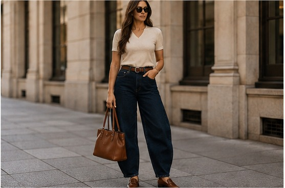
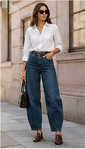
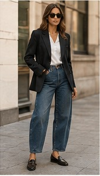
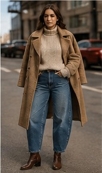
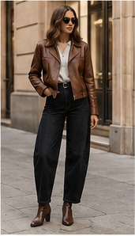
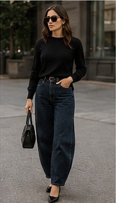
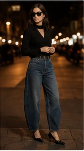
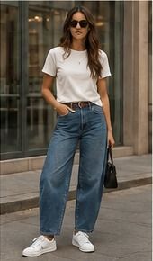

How to Style Wide-Leg Trousers for Women: 15 Outfit Ideas
Wide-leg trousers are one of the easiest ways to make an outfit feel polished without sacrificing comfort. Here is how to style wide-leg trousers for women with practical outfit ideas, the best tops and shoes, flattering proportions, and seasonal combinations.

If you have ever wondered how to style wide-leg trousers without making an outfit look oversized, the answer usually comes down to proportion. Wide trousers already provide volume through the leg, so the rest of the outfit can either define the waist or add carefully controlled structure.
That does not mean every wide-leg trouser outfit has to be fitted on top. Oversized blazers, relaxed shirts and chunky layers can work too when the proportions are intentional. The goal is to make the entire outfit look considered rather than accidentally bulky.
Why Wide-Leg Trousers Are So Popular
Wide-leg trousers have become a dependable alternative to skinny and slim silhouettes because they combine movement with a more tailored appearance. Depending on the fabric and cut, they can look relaxed, sophisticated, minimalist or distinctly fashion-forward.
They are also remarkably versatile. A pair of black tailored trousers can move from a work outfit to dinner with only a change of shoes and accessories, while denim or cotton versions can create casual everyday looks.
The most important detail is fit. “Wide-leg” describes the shape of the leg, not a requirement for trousers to be several sizes too large. The waistband and rise should feel comfortable and intentional, while the leg should have the amount of volume you prefer.
How to Style Wide-Leg Trousers
Before building an outfit, consider three things: proportion, length and occasion. A high-waisted pair may look especially polished with a tucked shirt, while a lower-rise relaxed pair can work well with a shorter jacket or fitted knit.
Full-length trousers can visually extend the leg, particularly when worn with shoes that have a little height. Cropped wide-leg trousers create a different effect and put more attention on the footwear.
15 Wide-Leg Trousers Outfit Ideas
These wide-leg trousers outfit ideas cover casual, polished, office-friendly and seasonal styling. Use them as starting points rather than strict rules.
Classic White Shirt and Wide-Leg Trousers

A crisp white button-down shirt is one of the easiest tops to wear with wide-leg trousers. Tuck the shirt into high-waisted trousers to emphasize the waist and keep the outfit clean.
For a relaxed version, leave the first few buttons open and roll the sleeves. Add a structured handbag and simple jewelry when you want the outfit to feel more polished.
Fitted Black Top for a Sleek Silhouette
A fitted black top creates a strong contrast with the volume of wide-leg trousers. This combination is particularly easy with cream, beige, gray or denim trousers.
Keep the accessories simple and let the shape of the trousers become the main feature. Pointed shoes or a small heel can add an elegant finish.
Tailored Blazer and Wide-Leg Trousers

A blazer instantly makes wide-leg trousers feel more structured. For the best balance, try a fitted camisole, T-shirt or slim knit under the blazer.
Matching the blazer and trousers creates a suit-inspired look, while contrasting colors make the outfit more relaxed and contemporary.
Lightweight Knit for a Minimal Look

Lightweight knitwear works especially well when you want comfort without losing shape. Choose a knit that can be tucked or partially tucked into the waistband.
Neutral shades such as cream, taupe, gray, chocolate and black create a sophisticated minimalist outfit.
Denim Jacket for Casual Street Style

A denim jacket gives wide-leg trousers a casual everyday feel. This works particularly well with a simple fitted T-shirt or tank top underneath.
Finish the look with sneakers, a crossbody bag and understated accessories for an easy weekend outfit.
Monochrome Wide-Leg Trouser Outfit

Dressing in one color family is a simple way to make wide-leg trousers look streamlined. Black-on-black is timeless, while cream, beige, gray and chocolate create softer alternatives.
Varying textures keeps a monochrome outfit from looking flat. Try a knit top with tailored trousers or a satin blouse with matte fabric.
Wide-Leg Trousers with Heels

Heels are an easy option when you want a more elongated appearance. The trouser hem should work with the height of the shoe rather than dragging heavily on the floor.
Pointed-toe pumps, kitten heels and refined sandals can all work depending on the occasion.
Sneakers for an Everyday Outfit

Sneakers make wide-leg trousers feel relaxed and modern. A fitted T-shirt, cropped jacket or tucked sweater helps keep the proportions intentional.
Low-profile sneakers tend to create a cleaner look, while chunkier styles give the outfit a more casual streetwear direction.
Striped Top and Neutral Trousers
A striped top adds visual interest without requiring complicated styling. Pair a classic striped shirt with cream, beige, navy or black wide-leg trousers.
Keep the rest of the outfit relatively simple so the stripe remains the main pattern.
Short Jacket and High-Waisted Trousers
A cropped or shorter jacket naturally highlights the waistline of high-rise wide-leg trousers. This is useful when you want to add a layer without covering the entire upper half of the outfit.
Try a cropped leather jacket, short cardigan or structured jacket with a simple base layer.
Statement Blouse for Dinner
A statement blouse can transform wide-leg trousers into an evening-ready outfit. Look for interesting sleeves, texture, draping or a distinctive neckline.
Keep the trousers relatively simple so the blouse remains the focus. Add delicate jewelry and a small handbag for a refined finish.
Relaxed Sweater and Wide-Leg Trousers
An oversized sweater can work with wide trousers, but proportion matters. Try a partial tuck, a shorter sweater or a defined waistband underneath.
This combination is especially useful during cooler months when comfort and layering are priorities.
Wide-Leg Trousers with Ballet Flats
Ballet flats give wide-leg trousers a softer, feminine finish. They work particularly well with slightly cropped trousers or full-length trousers with a carefully tailored hem.
Choose a simple flat for an understated outfit or use a textured or embellished pair when you want the shoes to become an accent.
Fall Coat and Wide-Leg Trousers
For fall, combine wide-leg trousers with a lightweight knit and a structured coat. A long coat can create a long vertical line, while ankle boots add definition at the bottom of the outfit.
Camel, chocolate, charcoal, cream and black are particularly easy colors to combine for a seasonal wardrobe.
Minimal Black Wide-Leg Trousers
Black wide-leg trousers are one of the most versatile versions to own. Pair them with a black fitted top for a sleek outfit or introduce white, cream or gray for contrast.
A structured handbag and simple jewelry can make this combination feel polished enough for dinner, events or a smart-casual setting.
What Tops to Wear with Wide-Leg Trousers
Choosing the right top is less about following one strict rule and more about deciding where you want the visual balance to sit.
Fitted T-Shirts
A fitted T-shirt is an easy everyday option because it creates a clear contrast with the wider trouser leg. Tuck it into high-rise trousers or choose a shorter length.
Button-Down Shirts
Button-down shirts are especially effective for polished outfits. A full tuck creates definition, while a relaxed half-tuck gives the look a more casual feel.
Blazers
Blazers bring structure to wide-leg trousers. If both pieces are oversized, keep the base layer relatively simple and use the waistline or shoe choice to create visual definition.
Knitwear
Fine-gauge sweaters and fitted knits are easy to tuck. Chunkier sweaters can also work when their length and volume are intentionally balanced with the trousers.
What Shoes to Wear with Wide-Leg Trousers
Shoes have a major effect on the final shape of a wide-leg trouser outfit. The best choice depends on the hem, trouser fabric and occasion.
| Shoe | Best For | Styling Direction |
|---|---|---|
| Heels | Evening, events, polished outfits | Elegant and elongated |
| Loafers | Office and smart casual | Classic and tailored |
| Sneakers | Everyday casual | Relaxed and modern |
| Ballet Flats | Casual and feminine outfits | Soft and understated |
| Ankle Boots | Fall and winter | Structured and seasonal |
| Sandals | Warm-weather outfits | Light and relaxed |
Best Colors for Wide-Leg Trousers
Neutral trousers are generally the easiest to style because they can work with a wide range of tops. Black, cream, beige, gray, navy and chocolate are particularly versatile.
Denim wide-leg trousers are another practical option. Medium blue denim works with white, black, gray, brown, burgundy and many other shades.
If you prefer statement trousers, let the trousers provide the color and keep the rest of the outfit comparatively restrained.
How to Make Wide-Leg Trousers Look More Flattering
There is no single “correct” body type for wide-leg trousers. The most flattering result usually comes from finding the combination of rise, fabric, volume and length that feels right for you.
Five fit details to check
- Waist: The waistband should sit comfortably without digging in.
- Rise: Choose a rise that works naturally with the tops you like to wear.
- Volume: Pick the leg width you actually feel comfortable wearing.
- Length: Check the hem with the shoes you plan to wear most.
- Fabric: Structured fabric creates a sharper shape, while fluid fabric creates softer movement.
Common Wide-Leg Trouser Styling Mistakes
Choosing the Wrong Length
A trouser hem that constantly drags can make an otherwise polished outfit look unfinished. Consider having the trousers altered if the length does not work with your everyday shoes.
Ignoring the Waistline
Wide trousers already have plenty of volume. If your top completely hides the waistband, the outfit can sometimes lose its sense of proportion. A tuck, partial tuck or shorter top can help.
Adding Too Many Oversized Pieces
Oversized styling can absolutely work, but wearing very wide trousers with a very long oversized top and a large outer layer can make the silhouette difficult to read. Give at least one part of the outfit some definition.
Forgetting the Shoes
Shoes should be considered before deciding the final trouser length. A pair that works with heels may sit differently with flat sneakers.
How to Wear Wide-Leg Trousers to Work
Tailored wide-leg trousers are a strong choice for professional wardrobes. Pair them with a tucked shirt, fine knit, structured blazer or simple blouse.
For a conservative workplace, keep colors understated and choose clean footwear such as loafers, pumps or low-profile ankle boots. In a more relaxed office, sneakers or refined flats may also work depending on the dress code.
How to Style Wide-Leg Trousers in Fall and Winter
Wide-leg trousers transition easily into colder weather. Add knitwear, structured coats and boots while keeping the overall silhouette balanced.
A tonal outfit is especially easy for fall and winter. Try cream trousers with a beige knit and camel coat, or black trousers with a charcoal sweater and black boots.
For extra warmth, layer a fitted base underneath a jacket or coat rather than relying on several oversized layers at once.
Building a Wardrobe Around Wide-Leg Trousers
If you are buying your first pair, a neutral tailored style is usually the most flexible starting point. From there, add one casual denim or cotton pair and then experiment with seasonal colors or fabrics.
The goal is not to own dozens of trousers. A small selection that works with your existing shirts, knits, jackets and shoes can create many different outfits.
Frequently Asked Questions
Fitted T-shirts, tucked button-down shirts, bodysuits, cropped tops, lightweight knits and tailored blazers can all work well. The key is creating enough definition around the waist and balancing the volume of the trousers.
Heels, loafers, ballet flats, sneakers, ankle boots and sandals can all work. Choose footwear according to the trouser length, fabric and occasion.
Wide-leg trousers can work beautifully on many body shapes. Fit, rise, fabric, length and personal styling usually matter more than following a particular body-shape rule.
Yes. Tailored wide-leg trousers can look polished for work when paired with structured shirts, fitted knitwear, blazers, loafers or understated heels.
Choose a hem that works with your everyday shoes and have the trousers tailored when necessary. The ideal length depends on the trouser cut and footwear.
Final Thoughts
Learning how to style wide-leg trousers is mostly about understanding proportion rather than following complicated fashion rules. Start with the fit and length of the trousers, then choose tops and layers that create the silhouette you want.
For an easy everyday outfit, try wide-leg trousers with a fitted T-shirt and sneakers. For work, pair tailored trousers with a tucked shirt and blazer. For evening, switch to a statement blouse and heels. In colder weather, add knitwear, a structured coat and boots.
Most importantly, use these ideas as a starting point. The best wide-leg trouser outfit is the one that fits comfortably, works for your lifestyle and feels like your personal style.
More Style Inspiration Awaits
Explore Fashion QD for practical outfit ideas, fashion guides and style inspiration designed to make everyday dressing easier.
Explore Fashion